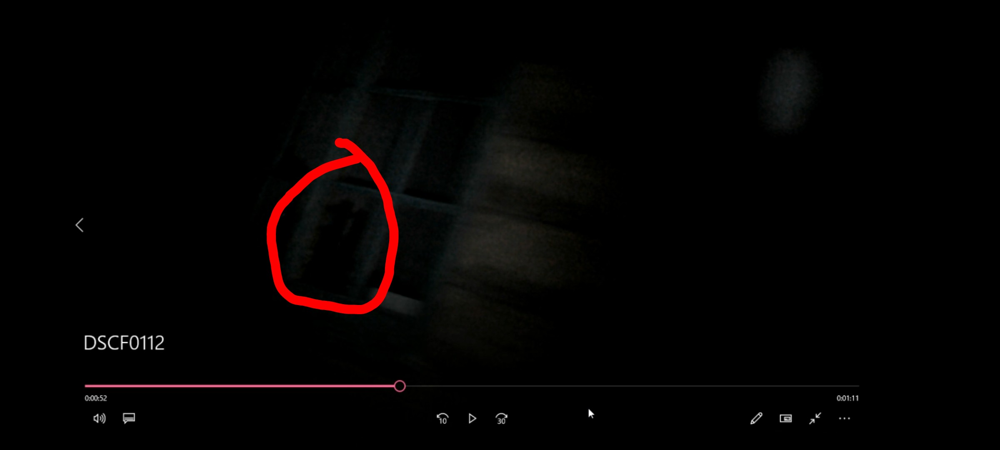
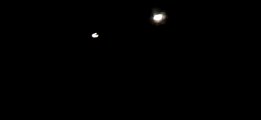
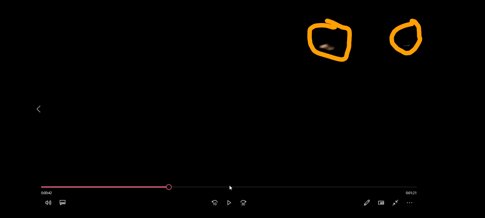

Gallery
DSCF0112.mp4 (Evidence Footage)
Raw footage from the night hike at Shamy Camp, believed to capture unexplained events.
(Note: The video is dark and may contain disturbing imagery.)
(Note: The video is dark and may contain disturbing imagery.)
DSCF0114.AVI (Laptop Incident)
Recently recovered footage showing Halo's disturbing encounter in a room with his laptop. Heavy breathing and unexplained sounds are reported.

Figure Spotted (Screenshot)
Frame from evidence video with a red circle highlighting a possible human-like figure in the darkness.
Akgitated Human Body (Still)
Digital/photographic image resembling a barely discernible human figure, mostly obscured by darkness.

Eyes in the Dark
Two bright lights appearing as eyes in the sky, visible during the night hike.
(Screenshot taken during footage playback.)
(Screenshot taken during footage playback.)

Eyes Highlighted (Video Screenshot)
Video player screenshot at 0:42, with orange circles marking possible 'eyes' seen in the recording.